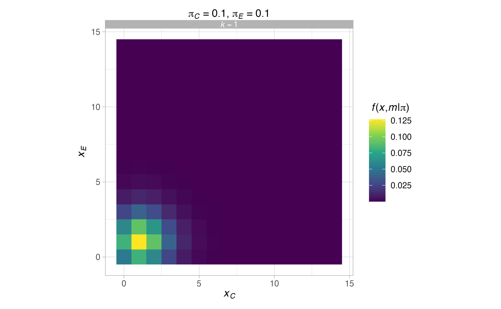
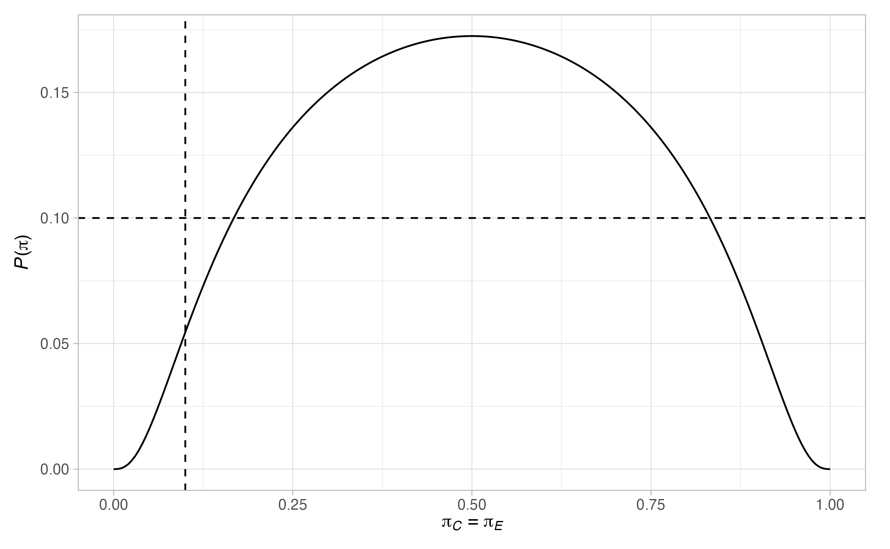
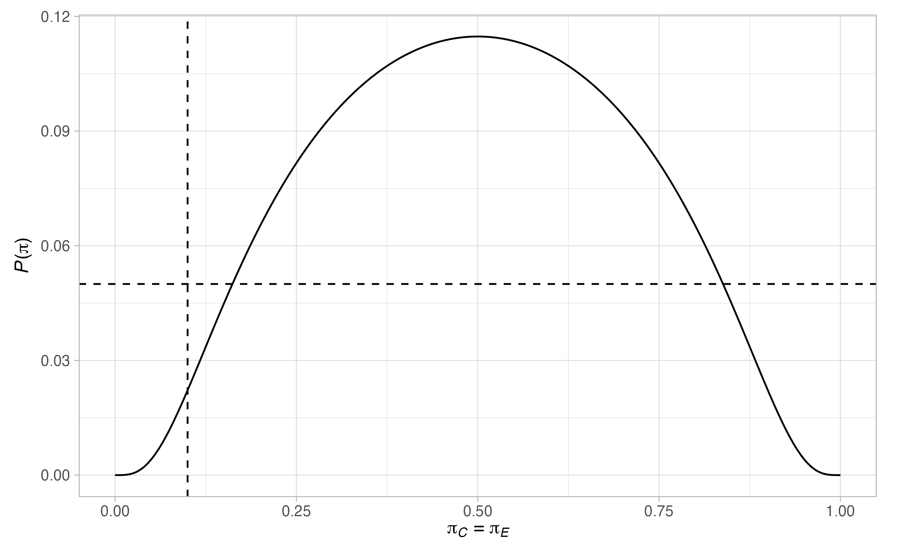
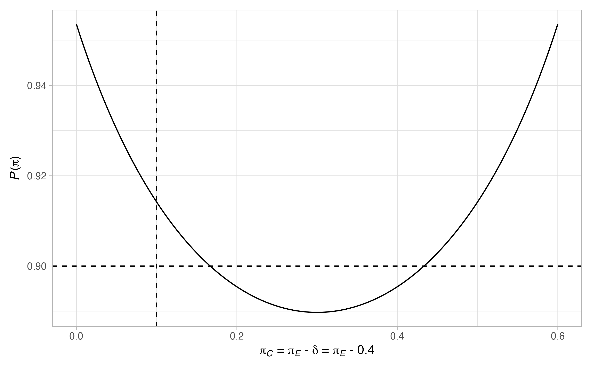

ph2rand: Design of randomized comparative phase II oncology trials with a Bernoulli distributed primary outcome
Michael J Grayling (michael.grayling@newcastle.ac.uk)
2020-09-23
Source:vignettes/ph2rand.Rmd
ph2rand.Rmdph2rand provides functions to assist with the design of randomized comparative phase II oncology trials that assume their primary outcome variable is Bernoulli distributed. Specifically, support is provided to (a) perform a sample size calculation when using one of several published designs, (b) evaluate the operating characteristics of a given design (both analytically and via simulation), and (c) produce informative plots.
This vignette will proceed by detailing the type of trial designs ph2rand currently supports. Each of the available functions will then be described, before several examples and useful further information will be provided.
1. Introduction
Whilst almost all phase II oncology trials once utilised single-arm non-randomised designs, a large proportion now use randomised comparative designs. The reasons for this change in design are numerous, and are described at length in Grayling et al (2019). For the purposes of this vignette, the important consideration is that with the increased use of randomised comparative designs in phase II, software for determining such designs increases in value. It is for this reason that this package, ph2rand, has been developed. Its goal is to eventually support design determination when using the vast majority of published methods for randomised comparative oncology trials. At present, the focus is on the most commonly used class of design: those for two-arm trials with a single primary outcome variable that is assumed to be Bernoulli distributed.
2. Randomized comparative phase II oncology trials
2.1. Design setting
At present, all of the methods supported by ph2rand can be described within a single design framework. Each assumes that a single experimental treatment regimen will be compared to a single concurrent control arm (which would typically be expected to be the current standard-of-care treatment option), through a trial with at most \(J\in\mathbb{N}^+\) stages (i.e., in what follows we will simultaneously treat one-stage designs and designs that include interim analyses).
Furthermore, each supposes that the treatment’s anti-tumour activity will be formally compared through a single Bernoulli distributed primary outcome variable (e.g., tumour response or the disease control rate). Precisely, they assume that outcomes \(y_{ijk}\) are accrued from patients \(i\in\{1,\dots,n_{jk}\}\), in stage \(j\in\{1,\dots,J\}\), in arm \(k\in\{C,E\}\), with \(Y_{ijk} \sim Bern(\pi_k)\) (i.e., we use \(Y_{ijk}\) to indicate the random value of \(y_{ijk}\)). Here, arm \(k=C\) corresponds to the control arm and arm \(k=E\) to the experimental arm, and together the indices \(i\) and \(j\) define a particular patient. Thus, \(\pi_k\in[0,1]\) is the probability of success (or response, if you prefer) for patient \(ij\) when they are assigned to arm \(k\). For brevity in what follows, we set \(\boldsymbol{\pi}=(\pi_C,\pi_E)^\top\in[0,1]^2\), and from here we will refer to the \(\pi_k\) as response rates. Similarly, we set \(\boldsymbol{n}_k=(n_{1k},\dots,n_{Jk})\) for \(k\in\{C,E\}\). Note that at this stage we explicitly allow for the range of \(i\) to depend on both \(j\) and \(k\), which will be discussed again in Section 3.
With the above, the designs supported by ph2rand test the following null hypothesis
\[ H_0 : \pi_C \le \pi_E. \] Then, given a trial design of any kind returned by ph2rand, which we denote in generality at this point by \(\mathcal{D}\), we will signify the power function as follows
\[ P(\boldsymbol{\pi}) = \mathbb{P}(\text{Reject }H_0 \mid \boldsymbol{\pi},\mathcal{D}). \] Using the above definition, each of the design functions in ph2rand aims to return an optimised design (as defined below), which ensures that the type-I error-rate is controlled to a specified level \(\alpha \in (0,1)\) over a given set \(\Pi_0\subseteq [0,1]\). Formally, they look to identify a design with
\[ \max_{\pi\in\Pi_0} P\{(\pi,\pi)^\top\} \le \alpha. \] Thus, ph2rand implicitly assumes a monotonicity property on the power function such that the type-I error-rate is maximised along the boundary of the null hypothesis where \(\pi_C=\pi_E\). Note that \(\Pi_0\) can be anything from a single point (e.g., \(0.1\)), which would logically correspond to the anticipated response rate in the control arm, through to the entire line \([0,1]\). The implications of different choices for \(\Pi_0\) are discussed in Section 3.
Furthermore, ph2rand supports powering trials under the following flexible framework. First, a clinically relevant difference in response rates (or treatment effect) \(\delta \in (0,1]\) is specified. Then, a set \(\Pi_1 \subseteq [0,1-\delta]\) is nominated, such that design determination should ensure that
\[ \min_{\pi\in\Pi_1} P\{(\pi,\pi+\delta)^\top\} \ge 1 - \beta, \] where \(\beta\in(0,1)\) can be viewed as the type-II error-rate, and we refer to this scenario later as the alternative hypothesis.
The above outlines the hypothesis and error-rates each of the designs supported by ph2rand aims to control. To appreciate the differences between the way the designs work later, it is useful now to consider a general framework for decision making.
First, each design framework specifies particular test statistics \(\boldsymbol{t}_j\) that would be computed after stage \(j\) to base its decisions on. We denote that the random values of these test statistics by \(\boldsymbol{T}_j\). In all instances \(\boldsymbol{t}_j\) will be dependent on (at most) the chosen design (e.g., factors such as the sample size in each arm in each stage) and the number of responses seen in each arm in each stage. For computational purposes, it will be useful to categorise what we denote by \(\mathscr{T}_j\), the support of \(\boldsymbol{T}_j\) (i.e., the space of possible values such that \(\boldsymbol{t}_j\in\mathscr{T}_j\)). Note that it will always be the case that more positive values for the elements of \(\boldsymbol{t}_j\) indicate increased patient benefit on the experimental treatment.
In addition, each of the design frameworks specifies particular rejection, non-rejection, and continuation regions. Each of these can be viewed as a sub-space such that if the chosen test statistics belongs to that space, then a given associated decision will be made. As above, these sets will only ever be dependent on the chosen design and the number of responses seen in each arm in each stage. We define them as \(\mathscr{R}_j\), \(\mathscr{N}_j\), and \(\mathscr{C}_j\). Here, \(\mathscr{R}\), \(\mathscr{N}\), and \(\mathscr{C}\) are chosen to indicate rejection, non-rejection, and continuation respectively. As will be seen later, this framework can readily handle any value of \(J\), as we can always ensure a trial terminates after at most \(J\) stages by ensuring \(\mathscr{R}_J\cup\mathscr{N}_J = \mathscr{T}_J\). More generally, we can ensure a decision on how to proceed is always clear by making sure \(\mathscr{C}_j = \mathscr{T}_j\backslash\{\mathscr{R}_j \cup \mathscr{N}_j\}\), thus in what follows we do not explicitly state the forms for \(\mathscr{C}_j\). All designs supported by ph2rand ensure that these conditions are met.
Ultimately, with the above, the following algorithm describes how each of the designs work
- Set \(j=1\).
- Recruit \(n_{jk}\) patients to arms \(k\in\{C,E\}\) and gather the associated outcomes \(y_{ijk}\) for \(i\in\{1,\dots,n_{jk}\}\).
- Compute \(\boldsymbol{t}_j\) and use the following decision rules
- If \(\boldsymbol{t}_j \in \mathscr{C}_j\), set \(j=j+1\) and return to step 2.
- If \(\boldsymbol{t}_j \in \mathscr{R}_j\), terminate the trial and reject \(H_0\).
- If \(\boldsymbol{t}_j \in \mathscr{N}_j\), terminate the trial and do not reject \(H_0\).
The above completes the categorisation of the core principles of the designs supported by ph2rand. In practice, a large number of potential designs will meet the type-I and type-II error-rate criteria, and thus a condition is needed for choosing the best (i.e., optimal) design amongst these. Before we outline the optimality criteria supported by ph2rand, though, we describe the various statistical operating characteristics that it can return.
2.2. Operating characteristics
For one-stage designs, \(P(\boldsymbol{\pi})\) will likely be the only random quantity of interest. For designs with more than one stage, though, there are several additional random variables that should be considered. Firstly, it will generally be of both interest and great use to evaluate the probability that the trial stops at the end of each permitted stage, with sub-categorisation according to the decision on whether or not \(H_0\) should be rejected. We define these quantities for \(j\in\{1,\dots,J\}\) as follows
\[\begin{align} E_j(\boldsymbol{\pi}) &= \mathbb{P}(\text{Stop after stage }j\text{ and reject }H_0 \mid \boldsymbol{\pi},\mathscr{D}),\\ F_j(\boldsymbol{\pi}) &= \mathbb{P}(\text{Stop after stage }j\text{ and do not reject }H_0 \mid \boldsymbol{\pi},\mathscr{D}),\\ S_j(\boldsymbol{\pi}) &= E_j(\boldsymbol{\pi}) + F_j(\boldsymbol{\pi}), \end{align}\]
where we use the letters \(E\), \(F\), and \(S\) to signify efficacy (i.e., activity), futility (i.e., lack of activity), and stopping respectively. We can also think about the above via the following equations
\[\begin{align} E_1(\boldsymbol{\pi}) &= \mathbb{P}(\boldsymbol{T}_1 \in \mathscr{R}_1 \mid \boldsymbol{\pi},\mathcal{D}),\\ F_1(\boldsymbol{\pi}) &= \mathbb{P}(\boldsymbol{T}_1 \in \mathscr{N}_1 \mid \boldsymbol{\pi},\mathcal{D}),\\ S_1(\boldsymbol{\pi}) &= \mathbb{P}(\boldsymbol{T}_1 \notin \mathscr{C}_1 \mid \boldsymbol{\pi},\mathcal{D}),\\ \end{align}\]
and for \(j\in\{2,\dots,J\}\)
\[\begin{align} E_j(\boldsymbol{\pi}) &= \mathbb{P}(\boldsymbol{T}_1 \in \mathscr{C}_1,\dots,\boldsymbol{T}_{j-1}\in \mathscr{C}_{j-1},\boldsymbol{T}_j \in \mathscr{R}_j \mid \boldsymbol{\pi},\mathcal{D}),\\ F_j(\boldsymbol{\pi}) &= \mathbb{P}(\boldsymbol{T}_1 \in \mathscr{C}_1,\dots,\boldsymbol{T}_{j-1}\in \mathscr{C}_{j-1},\boldsymbol{T}_j \in \mathscr{N}_j \mid \boldsymbol{\pi},\mathcal{D}),\\ S_j(\boldsymbol{\pi}) &= \mathbb{P}(\boldsymbol{T}_1 \in \mathscr{C}_1,\dots,\boldsymbol{T}_{j-1}\in \mathscr{C}_{j-1},\boldsymbol{T}_j \notin \mathscr{C}_j \mid \boldsymbol{\pi},\mathcal{D}). \end{align}\]
Then, also of much interest will be the trials expected sample size under given response rates. To this end, denote by \(N\) the random variable giving the total sample size required by a trial, and set
\[\tilde{n}_{jk} = \sum_{l=1}^j n_{lk},\qquad k\in\{C,E\}. \] Then, we simultaneously define and compute the expected sample size as follows
\[ ESS(\boldsymbol{\pi}) = \mathbb{E}(N \mid \boldsymbol{\pi},\mathcal{D}) = \sum_{j=1}^J S_j(\boldsymbol{\pi})\left(\tilde{n}_{jC} + \tilde{n}_{jE}\right). \] We will also consider the standard deviation of the required sample size
\[\begin{align} SDSS(\boldsymbol{\pi}) &= \mathbb{E}(N^2 \mid \boldsymbol{\pi},\mathcal{D}) - \mathbb{E}(N \mid \boldsymbol{\pi},\mathcal{D})^2,\\ &= \sum_{j=1}^J S_j(\boldsymbol{\pi})\left(\tilde{n}_{jC} + \tilde{n}_{jE}\right)^2 - ESS(\boldsymbol{\pi})^2. \end{align}\]
Next, setting \(\tilde{S}_j(\boldsymbol{\pi}) = S_1(\boldsymbol{\pi}) + \cdots + S_j(\boldsymbol{\pi})\) and \(l = \text{argmin}_{j=1,\dots,J}\{\tilde{S}_j(\boldsymbol{\pi}) \ge 0.5\}\), we signify the median required sample size by
\[ MSS(\boldsymbol{\pi}) = \begin{cases} \tilde{n}_{lC} + \tilde{n}_{lE} + 0.5(n_{l+1C} + n_{l+1E}) \ &: \ \tilde{S}_l(\boldsymbol{\pi}) = 0.5, \\ \tilde{n}_{lC} + \tilde{n}_{lE} \ &: \ \tilde{S}_l(\boldsymbol{\pi}) \neq 0.5. \end{cases} \] Finally, we will denote the maximum possible value of \(N\) by \(\max N = \tilde{n}_{JC} + \tilde{n}_{JE}\).
2.3. Optimality criteria
Designs that meet the desired type-I and type-II error-rate criteria are known as feasible. Within ph2rand, feasible designs are identified by searching over a discrete set of possible trial designs, as is described further in Section 4.1.
Then, for a one-stage trial design, ph2rand defines the optimal design as the feasible design that has the largest value of \(\min_{\pi\in\Pi_1} P\{(\pi,\pi+\delta)^\top\}\), amongst the feasible designs with the smallest value of \(\max N\). For each of the designs currently supported this guarantees a unique optimal design.
For designs with \(J>1\), a more flexible optimality criteria is supported that builds upon that used, for example, in Jung et al (2004), Mander et al (2012), Wason et al (2012), and Wason (2015). Precisely, a set of weights, \(w_1,\dots,w_5\in[0,\infty)\), are selected. As is a value \(\pi_\text{O}\in[0,1-\delta]\). Then, the optimal design is that, amongst the feasible designs, which minimises the following criteria
\[\begin{multline} w_1ESS\{(\pi_\text{O},\pi_\text{O})^\top\} + w_2ESS\{(\pi_\text{O},\pi_\text{O} + \delta)^\top\} + w_3\max_{\pi\in[0,1]}ESS\{(\pi,\pi)^\top\}\\ + w_4\max_{\boldsymbol{\pi}\in[0,1]^2}ESS(\boldsymbol{\pi}) + w_5\max N. \end{multline}\]
In general, \(\pi_\text{O}\) should likely be chosen as the anticipated response rate in the control arm. In addition, it should typically be ensured that \(w_1+\cdots+w_4>0\), as many designs will likely share the same minimal maximal sample size. Note that there is no available result that guarantees the above criteria and the given restrictions on the weights will lead to a unique optimal design. However, in practice, this is almost certain to be the case. Additionally, note that in general setting \(w_3>0\) or \(w_4>0\) may be illogical unless both efficacy and futility stopping is permitted (see later), as their associated \(\max ESS\) criteria may be equal to \(\max N\) otherwise.
2.4. Supported designs
Currently, ph2rand supports the determination of four different types of randomised comparative design, all in one-stage and two-stage forms (i.e., they each support \(J\in\{1,2\}\)). Each is described in its own subsection below.
Note that in all instances the values \(n_{jk}\) are determined by searching over possible values for the \(n_{jC}\), assuming that \(n_{jE}=rn_{jC}\) for a specified allocation ratio \(r\).
Furthermore, in what follows the following notation will be helpful
\[\begin{align} x_{jk} &= \sum_{i=1}^{n_{jk}} y_{ijk},\qquad k\in\{C,E\},\\ z_j &= x_{jC} + x_{jE},\\ \tilde{x}_{jk} &= x_{1k} + \cdots + x_{jk},\\ \tilde{z}_j &= z_1 + \cdots + z_j. \end{align}\]
2.4.1. Jung (2008)
Jung (2008), in combination with further details provided in Jung (2013), outlines a design framework based on exact binomial tests. Specifically, the following test statistic is used at the end of stage \(j\in\{1,\dots,J\}\) \[ \boldsymbol{t}_j = t_{Dj} = \tilde{x}_{jE} - \tilde{x}_{lC}. \] That is, the difference between the number of responses observed on the experimental and control arms is used. Note that \(\mathscr{t}_j \subseteq \{-n_{C1}-\cdots-n_{Cj},\dots,n_{E1}+\cdots+n_{Ej}\}\); as noted earlier this is an important observation for efficient design determination.
This design then works by specifying the following rejection and non-rejection regions \[\begin{align} \mathscr{R}_j &= (e_j,\infty),\\ \mathscr{N}_j &= (-\infty,f_j]. \end{align}\]
Thus, for a \(J\) stage design, parameters \(e_1,\dots,e_J\) and \(f_1,\dots,f_J\) are needed. For brevity, set \(\boldsymbol{e}=(e_1,\dots,e_J)\) and \(\boldsymbol{f}=(f_1,\dots,f_J)\). With this, we have \(\mathcal{D} = \{\boldsymbol{n}_C,\boldsymbol{n}_E,\boldsymbol{e},\boldsymbol{f}\}\).
Note that with the above, if we wish to prevent early stopping for futility we can simply specify that \(f_j = -\infty\) for \(j\in\{1,\dots,J-1\}\). Similarly, to prevent early stopping for efficacy, we can set \(e_1=\dots=e_{J-1}=\infty\).
Furthermore, note that in all cases ph2rand ensures that \(e_J = f_J\). This is enough to ensure that \(\mathscr{C}_J=\emptyset\) and thus that a decision is made on \(H_0\) by the trial’s completion and the study ends after at most \(J\) stages. When \(J>1\), it also ensures that \(e_j > f_j\) for \(j\in\{1,\dots,J-1\}\), in such a way that \(\mathscr{C}_j \neq \emptyset\) for \(j\in\{1,\dots,J-1\}\).
Finally, note that because \(t_{Dj}\in\mathbb{Z}\), nothing is lost by making the assumption that \(e_j,f_j\in\mathbb{Z}\): ph2rand exploits this fact to search over possible designs as efficiently as possible. Specifically, as is discussed further in Section 3, the user specifies a range of allowed sample sizes. Then, ph2rand will search exhaustively over the designs that should be considered to evaluate all potential different options for the given sample sizes.
2.4.2. Shan et al (2013)
Shan et al (2013) propose a framework similar to Jung (2008), but based on the following Barnard style test-statistics
\[ \boldsymbol{t}_j = t_{Bj} = \frac{\frac{\tilde{x}_{jE}}{\tilde{n}_{jE}} - \frac{\tilde{x}_{jC}}{\tilde{n}_{jC}}}{\frac{\tilde{z}_j}{\tilde{n}_{jC} + \tilde{n}_{jE}}\left(1 - \frac{\tilde{z}_j}{\tilde{n}_{jC} + \tilde{n}_{jE}} \right)\left( \frac{1}{\tilde{n}_{jC}} + \frac{1}{\tilde{n}_{jE}} \right)}. \] The rejection, non-rejection, and continuation regions are as in Section 2.4.1. So to does the design search procedure remain qualitatively the same (i.e., exhaustive evaluation of potential designs is still carried out). However, whilst the \(t_{Bj}\) will still take a discrete set of possible values that can be used to limit the number of designs that should be considered, in this case \(t_{Bj}\in\mathbb{R}\), and thus we allow \(e_j,f_j\in\mathbb{R}\) also.
2.4.3. Jung and Sargent (2014)
Jung and Sargent (2014) propose a somewhat different design framework to those given above. Specifically, whilst the test statistic used in Jung (2008) is retained, the following rejection and non-rejection regions are nominated \[\begin{align} \mathscr{R}_j &= (e_{jz_1\dots z_j},\infty),\\ \mathscr{N}_j &= (-\infty,f_{jz_1\dots z_j}]. \end{align}\] Thus, \(\mathscr{R}_j\), \(\mathscr{N}_j\), and \(\mathscr{C}_j\) are allowed to vary based upon the the number of responses seen in the two arms in each stage.
Here, for brevity, we denote the \((\tilde{n}_{1C}+\tilde{n}_{1E}) \times \cdots \times (\tilde{n}_{jC}+\tilde{n}_{jE})\) arrays of efficacy and futility stopping boundaries for use after stage \(j\) by \(\boldsymbol{e}_j\) and \(\boldsymbol{f}_j\) respectively. Then, \(\mathcal{D} = \{\boldsymbol{n}_C,\boldsymbol{n}_E,\boldsymbol{e}_1,\dots,\boldsymbol{e}_J,\boldsymbol{f}_1,\dots,\boldsymbol{f}_J\}\).
Similarly to before, we can now prevent early stopping for efficacy or futility by prescribing that \(e_{jz_1\dots z_j}=\infty\) and \(f_{jz_1\dots z_j}=-\infty\) for \(j\in\{1,\dots,J\}\) and \((z_1,\dots,z_j) \in \{0,\dots,\tilde{n}_{1C}+\tilde{n}_{1E}\}\times\cdots\times\{0,\dots,\tilde{n}_{jC}+\tilde{n}_{jE}\}\).
Unlike before, though, the boundaries are now not identified using an exhaustive search. Firstly, this is because this search procedure would be too computationally intensive to be useful in practice. However, the principal reason they are not chosen via an exhaustive assessment is because the motivation for this design framework comes from Fisher’s exact test and its approach to guaranteeing error control. See Jung and Sargent (2014) for further details.
2.4.4. Litwin et al (2017)
The design from Litwin et al (2017) takes a different approach to those above and uses two test statistics to make a decision. Specifically, it combines testing rules typically associated with single-arm and two-arm trial designs, setting
\[ \boldsymbol{t}_j=(t_{Sj},t_{Dj})^\top = (\tilde{x}_{jE},\tilde{x}_{jE} - \tilde{x}_{jC}). \] Then, the rejection and non-rejection regions are \[\begin{align} \mathscr{R}_j &= (e_{Sj},\infty)\times(e_{Tj},\infty),\\ \mathscr{N}_j &= \{(-\infty,f_{sj}]\times\mathbb{R}\}\cup\{\mathbb{R}\times(-\infty,f_{Tj}]\}. \end{align}\] Thus, for a \(J\) stage design, parameters \(e_{S1},\dots,e_{SJ}\), \(e_{T1},\dots,e_{TJ}\), \(f_{S1},\dots,f_{SJ}\), and \(f_{T1},\dots,f_{TJ}\) are needed. For brevity, set \(\boldsymbol{e}_S=(e_{S1},\dots,e_{SJ})\), \(\boldsymbol{e}_T=(e_{T1},\dots,e_{TJ})\), \(\boldsymbol{f}_S=(f_{S1},\dots,f_{SJ})\), and \(\boldsymbol{f}_T=(f_{T1},\dots,f_{TJ})\). With this, we have \(\mathcal{D} = \{\boldsymbol{n}_C,\boldsymbol{n}_E,\boldsymbol{e}_S,\boldsymbol{e}_T,\boldsymbol{f}_S,\boldsymbol{f}_T\}\).
Furthermore, in this case, early stopping for futility can be prevented by setting \(f_{S1}=\cdots=f_{SJ-1}=f_{T1}=\cdots=f_{TJ-1}=-\infty\). Similarly, early stopping for efficacy can be prevented by setting \(e_{S1}=\cdots=e_{SJ-1}=e_{T1}=\cdots=e_{TJ-1}=\infty\).
As for the designs from Jung (2008) and Shan et al (2013) described above, optimal designs are again identified via an exhaustive search procedure. Here, we make use of the fact that nothing is lost from assuming \(\boldsymbol{e}_S,\boldsymbol{e}_T,\boldsymbol{f}_S,\boldsymbol{f}_T\in\mathbb{Z}^J\). Furthermore, ph2rand enforces \(e_{SJ} = f_{SJ}\) and \(e_{TJ} = f_{TJ}\), which ensures \(\mathscr{C}_J=\emptyset\). When \(J>1\), it also makes particular restrictions such that \(e_{Sj} > f_{Sj}\) and \(e_{Tj} > f_{Tj}\) which ensure \(\mathscr{C}_j \neq \emptyset\) for \(j\in\{1,\dots,J-1\}\).
3. Available functions
At present, ph2rand exports ten functions for user use, each of which is described in detail below.
Note that the computations in all of the functions except sim() are performed using exact binomial probabilities, without recourse to simulation or numerical approximations. Consequently, for all of these we should always have that \(S_1(\boldsymbol{\pi}) + \cdots + S_J(\boldsymbol{\pi}) = 1\), and \(P(\boldsymbol{\pi}) = E_1(\boldsymbol{\pi}) + \cdots + E_J(\boldsymbol{\pi})\).
In addition, where helpful Rcpp is utilised in order to speed up the evaluations. Nonetheless, notes are given below on options that may substantially increase run time.
3.1. des_one_stage()
des_one_stage() determines one-stage two-arm randomised clinical trial designs within the framework described above (i.e., in particular assuming the primary outcome variable is Bernoulli distributed). In all instances, des_one_stage() computes the optimal required sample size in each arm, the associated optimal stopping boundaries, and returns information on key operating characteristics.
It allows the following inputs to be specified
-
type: Acharacterstring indicating the chosen design framework/test statistic to assume. Must be one of"barnard"(see Section 2.4.2),"binomial"(Section 2.4.1),"fisher"(Section 2.4.3), or"sat"(Section 2.4.4). Defaults to"binomial". -
alpha: Anumericindicating the chosen value for \(\alpha\), the significance level (i.e., the type-I error-rate). Defaults to0.1. -
beta: Anumericindicating the chosen value for \(\beta\), used in the definition of the desired power (i.e., the type-II error-rate). Defaults to0.2. -
delta: Anumericindicating the chosen value for \(\delta\), the treatment effect assumed in the power calculation. Defaults to0.2. -
ratio: Anumericindicating the chosen value for \(r\), the allocation ratio to the experimental arm, relative to the control arm. Defaults to1. -
Pi0: Anumericvectorindicating the chosen value for \(\Pi_0\), the control arm response rates to control the type-I error-rate to level \(\alpha\) for. Must either be oflengthone, indicating a single point, or oflengthtwo. In this case, the elements indicate the range of possible response rates to allow for. Defaults to0.1. -
Pi1: Anumericvectorindicating the chosen value for \(\Pi_1\)s, the control arm response rates to allow for in the power calculations. Must either be oflengthone, indicating a single point, or oflengthtwo. In this case, the elements indicate the range of possible response rates to allow for. Defaults toPi0[1]. -
nCmax: Anumericindicating the maximum value of the sample size in the control arm, \(\tilde{n}_{JC}\), to consider in the search procedure. Defaults to50L. -
summary: Alogicalvariable indicating whether a summary of the function’s progress should be printed to the console. Defaults toF.
It returns a list with additional class "ph2rand_des", containing each of the input parameters along with several additional variables, including
- A
listin the slot$boundariesgiving the rejection boundary/boundaries of the optimal design. The names of these elements depends on the value oftype. - A
tibblein the slot$feasiblesummarising the operating characteristics of the feasible designs. - A
numericin the slot$nCgiving the sample size in the control arm, \(n_{1C}\), for the optimal design. - A
numericin the slot$nEgiving the sample size in the experimental arm, \(n_{1E}\), for the optimal design. - A
tibblein the slot$opcharsummarising the operating characteristics of the optimal design.
3.2. des_two_stage()
3.2.1. Inputs and outputs
des_two_stage() determines two-stage two-arm randomised clinical trial designs within the framework described above (i.e., in particular assuming the primary outcome variable is Bernoulli distributed). In all instances, des_two_stage() computes the optimal required sample size in each arm in each stage, the associated optimal stopping boundaries, and returns information on key operating characteristics.
It allows the following inputs to be specified
-
type: Acharacterstring indicating the chosen design framework/test statistic to assume. Must be one of"barnard"(see Section 2.4.2),"binomial"(Section 2.4.1),"fisher"(Section 2.4.3), or"sat"(Section 2.4.4). Defaults to"binomial". -
alpha: Anumericindicating the chosen value for \(\alpha\), the significance level (i.e., the type-I error-rate). Defaults to0.1. -
beta: Anumericindicating the chosen value for \(\beta\), used in the definition of the desired power (i.e., the type-II error-rate). Defaults to0.2. -
delta: Anumericindicating the chosen value for \(\delta\), the treatment effect assumed in the power calculation. Defaults to0.2. -
ratio: Anumericindicating the chosen value for \(r\), the allocation ratio to the experimental arm, relative to the control arm. Defaults to1. -
Pi0: Anumericvectorindicating the chosen value for \(\Pi_0\), the control arm response rates to control the type-I error-rate to level \(\alpha\) for. Must either be oflengthone, indicating a single point, or oflengthtwo. In this case, the elements indicate the range of possible response rates to allow for. Defaults to0.1. -
Pi1: Anumericvectorindicating the chosen value for \(\Pi_1\)s, the control arm response rates to allow for in the power calculations. Must either be oflengthone, indicating a single point, or oflengthtwo. In this case, the elements indicate the range of possible response rates to allow for. Defaults toPi0[1]. -
nCmax: Anumericindicating the maximum value of the sample size in the control arm (across both stage), \(\tilde{n}_{JC}\), to consider in the search procedure. Defaults to50L. -
equal: Alogicalvariable indicating whether the sample size of the two stages should be equal (i.e., whether we should enforce \(n_{1C}=n_{2C}\) and \(n_{1E}=n_{2E}\)). Defaults toT. -
w: Anumericvectorindicating the weights to use in the optimality criteria. Must be oflengthfive, with all elements greater than or equal to zero, and at least one of the first four elements strictly positive. Defaults toc(1, 0, 0, 0, 0). -
piO: Anumericindicating the chosen value of \(\pi_O\), the control arm response rate to assume in the optimality criteria. Defaults toPi0[1]. -
efficacy: Only used iftypeis one of"barnard","binomial", or"sat". Then, it is alogicalvariable indicating whether to include early stopping for efficacy in the design. Defaults toF. -
futility: Only used iftypeis one of"barnard","binomial", or"sat". Then, it is alogicalvariable indicating whether to include early stopping for futility in the design. Defaults toT. -
efficacy_type: Only used iftypeis"fisher". Then, it is anumericindicating whether, and which type of, early stopping for efficacy to include in the design. See below for details. Defaults to0L. -
efficacy_param: Only used iftypeis"fisher"andefficacy_typeis not equal to0L. Then, it is anumericthat influences the precise way in which an efficacy boundary is specified. See below for details. Defaults toNULL. -
futility_type: Only used iftypeis"fisher". Then, it is anumericindicating whether, and which type of, early stopping for futility to include in the design. See below for details. Defaults to1L. -
futility_param: Only used iftypeis"fisher"andfutility_typeis not equal to0L. Then, it is anumericthat influences the precise way in which a futility boundary is specified. See below for details. Defaults to1L. -
summary: Alogicalvariable indicating whether a summary of the function’s progress should be printed to the console. Defaults toF.
It returns a list with additional class "ph2rand_des", containing each of the input parameters along with several additional variables, including
- A
listin the slot$boundariesgiving the rejection boundary/boundaries of the optimal design. The names of these elements depends on the value oftype. - A
tibblein the slot$feasiblesummarising the operating characteristics of the feasible designs. - A
numericin the slot$nCgiving the sample sizes in the control arm in each stage, \(\boldsymbol{n}_C=(n_{1C},\dots,n_{JC})^\top\), for the optimal design. - A
numericin the slot$nEgiving the sample sizes in the experimental arm in each stage, \(\boldsymbol{n}_E=(n_{1E},\dots,n_{JE})^\top\), for the optimal design. - A
tibblein the slot$opcharsummarising the operating characteristics of the optimal design.
3.2.2. Stopping boundaries when type = "fisher"
When type = "fisher", the input parameters efficacy_type, efficacy_param, futility_type, and futility_param allow for highly flexible choices for how to specify \(\boldsymbol{e}_1\) and \(\boldsymbol{f}_1\) {\(\boldsymbol{e}_2\) always being computed as in Jung and Sargent (2014)}. Specifically, efficacy_type must be equal to 0, 1, or 2. Then - A value of 0 indicates that early stopping for efficacy should be prevented. - For a value of 1, efficacy_param can then be set to NULL or any single numeric whole number. When it is NULL, ph2rand sets \[ e_{1z_1} = [0.5(n_{1C} + n_{1E})\delta]_* + 1,\] where \([x]_*\) indicates the nearest whole number to \(x\), as originally proposed by Jung and Sargent (2014). When it is any given whole number, \(e\) say, it sets \(e_{1z_1}=e\) for all \(z_1\). - For a value of 2, efficacy_param must be a single numeric in the range \((0,1)\). If we refer to this as \(\alpha_1\), say, then ph2rand chooses \(e_{1z_1}\) as \[ e_{1z_1} = \text{argmin}_{e\in\{-n_{C1},\dots,n_{E1}\}} [\text{max}_{\pi\in\Pi_0} E_1\{(\pi,\pi)^\top\} \le \alpha_1].\] Similarly, futility_type must also be equal to 0, 1, or 2. In this case - A value of 0 indicates that early stopping for futility should be prevented. - For a value of 1, futility_param must be a single numeric whole number. If this is \(f\), say, ph2rand sets $ f_{1z_1} = f$ for all \(z_1\). - For a value of 2, futility_param must be a single numeric in the range \((0,1)\). If we refer to this as \(\beta_1\), say, then ph2rand chooses \(f_{1z_1}\) as \[ f_{1z_1} = \text{argmax}_{f\in\{-n_{C1},\dots,n_{E1}\}} [\text{max}_{\pi\in\Pi_1} F_1\{(\pi,\pi+\delta)^\top\} \le \beta_1].\]
3.3. terminal()
terminal() determines the terminal points of a design returned by des_one_stage() or des_two_stage(), along with their associated decisions. That is, it returns all possible values of the number of responses that could be observed in the arms (stratified by stage where relevant), gives details on what the associated test statistic(s) would be, and provides information on what the decision would be in regards to \(H_0\). For two-stage designs it also provides details on the scenarios that would lead to continuation to stage two at the interim analysis.
It allows the following inputs to be specified
-
des: An object of class"ph2rand_des", as returned bydes_one_stage()ordes_two_stage(). Defaults toph2rand::des_one_stage(). -
k: Anumericvectorindicating which stages to consider when determining the terminal points. Defaults to1:des$J(i.e., to all stages of the given design). -
summaryAlogicalvariable indicating whether a summary of the function’s progress should be printed to the console. Defaults toF.
It returns a list with additional class "ph2rand_terminal", containing each of the input parameters along with a tibble in the slot $terminal, which gives the determined terminal points.
3.4. pmf()
pmf() analytically determines probability mass functions of a design returned by des_one_stage() or des_two_stage(), under given response rate scenarios (see pi).
It allows the following inputs to be specified
-
des: An object of class"ph2rand_des", as returned bydes_one_stage()ordes_two_stage(). Defaults toph2rand::des_one_stage(). -
pi: Anumericvectorwith two elements, ornumericmatrixordata.framewith two columns, giving the response rate scenarios to consider. The first element/column should correspond to the control arm and the second element/column to the experimental arm. Defaults todes$opchar[, 1:2]. -
k: Anumericvectorindicating which stages to consider in determining the probability mass functions. That is, it will condition the calculations on the trial ending in the stages given ink. Defaults to1:des$J(i.e., to all stages of the given design). -
summary: Alogicalvariable indicating whether a summary of the function’s progress should be printed to the console. Defaults toF.
It returns a list with additional class "ph2rand_pmf", containing each of the input parameters along with a tibble in the slot $pmf, which gives the determined probability mass functions.
3.5. opchar()
opchar() analytically determines the operating characteristics of a design returned by des_one_stage() or des_two_stage(), under given response rate scenarios (see pi).
It allows the following inputs to be specified
-
des: An object of class"ph2rand_des", as returned bydes_one_stage()ordes_two_stage(). Defaults toph2rand::des_one_stage(). -
pi: Anumericvectorwith two elements, ornumericmatrixordata.framewith two columns, giving the response rate scenarios to consider. The first element/column should correspond to the control arm and the second element/column to the experimental arm. Defaults todes$opchar[, 1:2]. -
k: Anumericvectorindicating which stages to consider in determining the probability mass functions. That is, it will condition the calculations on the trial ending in the stages given ink. Defaults to1:des$J(i.e., to all stages of the given design). -
summary: Alogicalvariable indicating whether a summary of the function’s progress should be printed to the console. Defaults toF.
It returns a list with additional class "ph2rand_opchar", containing each of the input parameters along with a tibble in the slot $opchar, which gives the determined operating characteristics.
3.6 sim()
sim() determines the operating characteristics of a design returned by des_one_stage() or des_two_stage(), under given response rate scenarios (see pi), via simulation.
It allows the following inputs to be specified
-
des: An object of class"ph2rand_des", as returned bydes_one_stage()ordes_two_stage(). Defaults toph2rand::des_one_stage(). -
pi: Anumericvectorwith two elements, ornumericmatrixordata.framewith two columns, giving the response rate scenarios to consider. The first element/column should correspond to the control arm and the second element/column to the experimental arm. Defaults todes$opchar[, 1:2]. -
k: Anumericvectorindicating which stages to consider in determining the probability mass functions. That is, it will condition the calculations on the trial ending in the stages given ink. Defaults to1:des$J(i.e., to all stages of the given design). -
replicates: Anumericindicating the number of replicate simulations to use in estimating the operating characteristics. Defaults to1e4. -
summary: Alogicalvariable indicating whether a summary of the function’s progress should be printed to the console. Defaults toF.
It returns a list with additional class "ph2rand_sim", containing each of the input parameters along with a tibble in the slot $sim, which gives the estimated operating characteristics.
See the other package vignette, accessible via vignette("validation"), for further discussion on how sim() can be used to confirm results determined by des_one_stage(), des_two_stage(), and opchar().
3.7. plot.ph2rand_des()
plot.ph2rand_des() plots the operating characteristics of a design returned by des_one_stage() or des_two_stage(), under a range of key response rate scenarios. For convenience, it also calls plot.ph2rand_terminal() to plot the terminal points of the design.
It allows the following inputs to be specified
-
x: An object of class"ph2rand_des", as returned bydes_one_stage()ordes_two_stage(). -
k: Anumericvectorindicating which stages to consider in determining the probability mass function. That is, it will condition the calculations on the trial ending in the stages given ink. Defaults to1:des$J(i.e., to all stages of the given design). -
output: Alogicalvariable indicating whether available outputs should be returned by the function.
If output = T, a list containing each of the input parameters along with a list in the slot $plots, which gives all of the available produced plots.
3.8. summary.ph2rand_des()
summary.ph2rand_des() prints a summary of a design returned by des_one_stage() or des_two_stage().
It allows the following inputs to be specified
-
x: An object of class"ph2rand_des", as returned bydes_one_stage()ordes_two_stage().
3.9. plot.ph2rand_terminal()
plot.ph2rand_terminal() plots the terminal points of a design, as returned by terminal().
It allows each of the following options to be specified
-
x: An object of class"ph2rand_terminal", as returned byterminal(). -
output: Alogicalvariable indicating whether outputs should be returned by the function. Defaults toF.
If output = T, it will return a list containing each of the input parameters along with a plot in the slot $plot, giving the produced plot of the terminal points.
3.10. plot.ph2rand_pmf()
plot.ph2rand_pmf() plots the probability mass functions of a design, as returned by pmf().
It allows the following inputs to be specified
-
x: An object of class"ph2rand_pmf", as returned bypmf(). -
output: Alogicalvariable indicating whether outputs should be returned by the function. Defaults toF.
If output = T, it will return a list containing each of the input parameters along with a list in the slot $plots, giving the produced plots of the probability mass functions.
4. Examples
4.1. One-stage design using Jung (2008)
First, lets consider a simple scenario where we specify that \(\Pi_0=\Pi_1=0.1\), \(\delta=0.2\), \(\alpha=\beta=0.1\), \(r=1\), and that a one-stage design of the type from Jung (2008) will be used. We can find this design as follows
des <- des_one_stage(type = "binomial", alpha = 0.1, beta = 0.1, delta = 0.2, ratio = 1, Pi0 = 0.1, Pi1 = 0.1, nCmax = 50L)
A simple summary can then be acquired with
summary(des) #> ------------------------------------------------- #> A single-stage trial based on an exact binomial test #> ------------------------------------------------- #> #> --------------- #> Hypothesis test #> --------------- #> You have chosen to test the following hypothesis #> H0 : piE <= piC #> with the following type-I error constraint #> P(0.1,0.1) <= alpha = 0.1 #> and the following type-II error constraint #> P(0.1,0.3) >= 1 - beta = 0.9 #> #> ----------------- #> Design parameters #> ----------------- #> The design has: #> - n1C = 40 #> - n1E = 40 #> - e1 = 4 #> #> ------------------------- #> Operating Characteristics #> ------------------------- #> Key operating characteristics include #> # A tibble: 2 x 3 #> piC piE `P(pi)` #> <dbl> <dbl> <dbl> #> 1 0.1 0.1 0.0940 #> 2 0.1 0.3 0.904
We can plot the terminal points of this design with
We can also find and plot the probability mass function for \(\boldsymbol{\pi}=(0.1,0.1)^\top\) and \(\boldsymbol{\pi}=(0.1,0.3)^\top\) via

The operating characteristics (i.e., power) under the same scenarios can be found and inspected with
opchar_des <- opchar(des, pi = rbind(c(0.1, 0.1), c(0.1, 0.3))) opchar_des$opchar #> # A tibble: 2 x 3 #> piC piE `P(pi)` #> <dbl> <dbl> <dbl> #> 1 0.1 0.1 0.0940 #> 2 0.1 0.3 0.904
Finally, we can plot the power for a wider range of scenarios with
plot(des)

4.2. Comparing one-stage designs across design frameworks
Now, to demonstrate the potential advantages of carefully choosing a design framework, lets consider another example with \(\Pi_0=\Pi_1=[0.1,0.3]\), \(\delta=0.25\), \(\alpha=0.05\), \(\beta=0.2\), and \(r=2\). A one-stage design of some kind will be used. We can find the optimal design for each of the four supported frameworks with
binomial <- des_one_stage(type = "binomial", alpha = 0.05, beta = 0.2, delta = 0.25, ratio = 2, Pi0 = c(0.1, 0.3), Pi1 = c(0.1, 0.3), nCmax = 50L) barnard <- des_one_stage(type = "barnard", alpha = 0.05, beta = 0.2, delta = 0.25, ratio = 2, Pi0 = c(0.1, 0.3), Pi1 = c(0.1, 0.3), nCmax = 50L) fisher <- des_one_stage(type = "fisher", alpha = 0.05, beta = 0.2, delta = 0.25, ratio = 2, Pi0 = c(0.1, 0.3), Pi1 = c(0.1, 0.3), nCmax = 50L) sat <- des_one_stage(type = "sat", alpha = 0.05, beta = 0.2, delta = 0.25, ratio = 2, Pi0 = c(0.1, 0.3), Pi1 = c(0.1, 0.3), nCmax = 50L)
We can then compare the sample size required in the control arm for each of these designs with
binomial$nC #> [1] 43 barnard$nC #> [1] 35 fisher$nC #> [1] 42 sat$nC #> [1] 43
Thus, the approach described in Shan et al (2013) is the most efficient in this case.
4.3. The effect of \(\Pi_0\) and \(\Pi_1\) on design operating characteristics
Next, we will consider how the choice of \(\Pi_0\) and \(\Pi_1\) effects the optimal design. As an illustrative example, consider a one-stage design for \(\delta=0.3\), \(\alpha=0.05\), \(\beta=0.1\), and \(r=1\), using the binomial approach. First, let’s find the design for \(\Pi_0=\Pi_1=0.1\), inspect its required sample size in the control arm, and plot its operating characteristics
binomial_1 <- des_one_stage(type = "binomial", alpha = 0.05, beta = 0.1, delta = 0.3, ratio = 1, Pi0 = 0.1, Pi1 = 0.1) binomial_1$nC #> [1] 24 plot(binomial_1)

Thus, \(24\) patients are required in the control arm. Notice that there are many scenarios when the type-I error-rate is larger than \(0.05\), and where the power is below \(0.9\). To ensure the maximal type-I error-rate is below \(0.05\), and the maximal type-II error-rate is below \(0.1\), we can re-run the above modifying the values of \(\Pi_0\) and \(\Pi_1\)
binomial_2 <- des_one_stage(type = "binomial", alpha = 0.05, beta = 0.1, delta = 0.3, ratio = 1, Pi0 = c(0, 1), Pi1 = c(0, 0.7)) binomial_2$nC #> [1] 49 plot(binomial_2)
 As we can see, this does provide a design well controlling the type-I and type-II error-rates across possible values of the control arm. However, it has increased the required sample size in the control arm by more than \(100%\) to 49.
As we can see, this does provide a design well controlling the type-I and type-II error-rates across possible values of the control arm. However, it has increased the required sample size in the control arm by more than \(100%\) to 49.
4.4. Comparing two-stage designs across design frameworks
Now lets repeat the example from Section 4.2, but for two-stage designs. For simplicity we set \(\Pi_0=\Pi_1=0.2\) in this case. We also assume the default values for all of the two-stage specific design parameters. Thus, we can find the optimal design for each of the four supported frameworks with
binomial <- des_two_stage(type = "binomial", alpha = 0.05, beta = 0.2, delta = 0.25, ratio = 2, Pi0 = 0.2, Pi1 = 0.2) barnard <- des_two_stage(type = "barnard", alpha = 0.05, beta = 0.2, delta = 0.25, ratio = 2, Pi0 = 0.2, Pi1 = 0.2, nCmax = 40L) fisher <- des_two_stage(type = "fisher", alpha = 0.05, beta = 0.2, delta = 0.25, ratio = 2, Pi0 = 0.2, Pi1 = 0.2) sat <- des_two_stage(type = "sat", alpha = 0.05, beta = 0.2, delta = 0.25, ratio = 2, Pi0 = 0.2, Pi1 = 0.2, nCmax = 20L)
We can then compare the sample size required in the control arm for each of these designs with
binomial$nC #> [1] 9 9 barnard$nC #> [1] 16 16 fisher$nC #> [1] 19 19 sat$nC #> [1] 7 7
Thus, the approach described in Litwin et al (2017) appears to be easily the most efficient in this case. In general, however, we may wish to also inspect more detailed operating characteristics of the designs, as follows
binomial$opchar #> # A tibble: 2 x 13 #> piC piE `P(pi)` `ESS(pi)` `SDSS(pi)` `MSS(pi)` `E1(pi)` `E2(pi)` `F1(pi)` #> <dbl> <dbl> <dbl> <dbl> <dbl> <dbl> <dbl> <dbl> <dbl> #> 1 0.2 0.2 0.0395 32.5 10.9 27 0 0.0395 0.797 #> 2 0.2 0.45 0.820 50.7 8.90 54 0 0.820 0.124 #> # … with 4 more variables: `F2(pi)` <dbl>, `S1(pi)` <dbl>, `S2(pi)` <dbl>, `max #> # N` <int> barnard$opchar #> # A tibble: 2 x 13 #> piC piE `P(pi)` `ESS(pi)` `SDSS(pi)` `MSS(pi)` `E1(pi)` `E2(pi)` `F1(pi)` #> <dbl> <dbl> <dbl> <dbl> <dbl> <dbl> <dbl> <dbl> <dbl> #> 1 0.2 0.2 0.0499 65.3 23.0 48 0 0.0499 0.640 #> 2 0.2 0.45 0.803 92.3 12.8 96 0 0.803 0.0777 #> # … with 4 more variables: `F2(pi)` <dbl>, `S1(pi)` <dbl>, `S2(pi)` <dbl>, `max #> # N` <int> fisher$opchar #> # A tibble: 2 x 13 #> piC piE `P(pi)` `ESS(pi)` `SDSS(pi)` `MSS(pi)` `E1(pi)` `E2(pi)` `F1(pi)` #> <dbl> <dbl> <dbl> <dbl> <dbl> <dbl> <dbl> <dbl> <dbl> #> 1 0.2 0.2 0.0294 106. 19.5 114 0 0.0294 0.136 #> 2 0.2 0.45 0.809 114. 0.662 114 0 0.809 0.000135 #> # … with 4 more variables: `F2(pi)` <dbl>, `S1(pi)` <dbl>, `S2(pi)` <dbl>, `max #> # N` <int> sat$opchar #> # A tibble: 2 x 13 #> piC piE `P(pi)` `ESS(pi)` `SDSS(pi)` `MSS(pi)` `E1(pi)` `E2(pi)` `F1(pi)` #> <dbl> <dbl> <dbl> <dbl> <dbl> <dbl> <dbl> <dbl> <dbl> #> 1 0.2 0.2 0.0490 23.7 6.99 21 0 0.0490 0.873 #> 2 0.2 0.45 0.805 38.3 7.96 42 0 0.805 0.174 #> # … with 4 more variables: `F2(pi)` <dbl>, `S1(pi)` <dbl>, `S2(pi)` <dbl>, `max #> # N` <int>
It is also important to evaluate the operating characteristics in more scenarios as, e.g., the type-I error-rate may be large in situations not allowed for in the design
plots <- plot(sat, output = T) plots$plots #> $terminal
#>
#> $grid
#> $grid$`P(pi)`#>
#> $grid$`ESS(pi)`#>
#> $grid$rejection#>
#> $grid$stopping#>
#>
#> $null
#> $null$`P(pi)`#>
#> $null$`ESS(pi)`#>
#> $null$rejection#>
#> $null$stopping#>
#>
#> $alt
#> $alt$`P(pi)`#>
#> $alt$`ESS(pi)`#>
#> $alt$rejection#>
#> $alt$stopping4.5. Comparing two-stage designs within a design framework
Finally, we consider how the choice of optimality criteria effects the optimal two-stage designs, in the framework of Jung (2008). We use the same parameters as in Section 4.4, but consider 3 possible combinations of \(w_1,\dots,w_5\), and include early stopping for efficacy
binomial_1 <- des_two_stage(type = "binomial", alpha = 0.05, beta = 0.2, delta = 0.25, ratio = 2, Pi0 = 0.2, Pi1 = 0.2, efficacy = T, w = c(1, 0, 0, 0, 0), nCmax = 30L) binomial_2 <- des_two_stage(type = "binomial", alpha = 0.05, beta = 0.2, delta = 0.25, ratio = 2, Pi0 = 0.2, Pi1 = 0.2, efficacy = T, w = c(0, 1, 0, 0, 0), nCmax = 30L) binomial_3 <- des_two_stage(type = "binomial", alpha = 0.05, beta = 0.2, delta = 0.25, ratio = 2, Pi0 = 0.2, Pi1 = 0.2, efficacy = T, w = c(1, 1, 0, 0, 1)/3, nCmax = 30L)
Lets compare the respective optimal designs
binomial_1$nC #> [1] 9 9 binomial_1$boundaries #> $e1 #> [1] 6 #> #> $e2 #> [1] 10 #> #> $f1 #> [1] 3 #> #> $f2 #> [1] 10 binomial_2$nC #> [1] 9 9 binomial_2$boundaries #> $e1 #> [1] 6 #> #> $e2 #> [1] 10 #> #> $f1 #> [1] 3 #> #> $f2 #> [1] 10 binomial_3$nC #> [1] 8 8 binomial_3$boundaries #> $e1 #> [1] 6 #> #> $e2 #> [1] 9 #> #> $f1 #> [1] 1 #> #> $f2 #> [1] 9
In this case, w = c(1, 0, 0, 0, 0) and w = c(0, 1, 0, 0, 0) produce the same optimal design. Let’s compare the operating characteristics of the two distinct designs
binomial_1$opchar #> # A tibble: 2 x 13 #> piC piE `P(pi)` `ESS(pi)` `SDSS(pi)` `MSS(pi)` `E1(pi)` `E2(pi)` `F1(pi)` #> <dbl> <dbl> <dbl> <dbl> <dbl> <dbl> <dbl> <dbl> <dbl> #> 1 0.2 0.2 0.0488 31.4 9.99 27 0.0391 0.00974 0.797 #> 2 0.2 0.45 0.805 33.6 11.6 27 0.631 0.175 0.124 #> # … with 4 more variables: `F2(pi)` <dbl>, `S1(pi)` <dbl>, `S2(pi)` <dbl>, `max #> # N` <int> binomial_3$opchar #> # A tibble: 2 x 13 #> piC piE `P(pi)` `ESS(pi)` `SDSS(pi)` `MSS(pi)` `E1(pi)` `E2(pi)` `F1(pi)` #> <dbl> <dbl> <dbl> <dbl> <dbl> <dbl> <dbl> <dbl> <dbl> #> 1 0.2 0.2 0.0441 35.7 12.0 24 0.0249 0.0192 0.487 #> 2 0.2 0.45 0.814 34.7 11.9 24 0.519 0.295 0.0363 #> # … with 4 more variables: `F2(pi)` <dbl>, `S1(pi)` <dbl>, `S2(pi)` <dbl>, `max #> # N` <int>
5. Miscellaneous
5.1. Contact
The first-line response to a possible bug should be to submit it as a New issue here. If the issue is more complex, or a patch is not provided in reasonable time, please email michael.grayling@newcastle.ac.uk. Similarly, please feel free to contact with suggestions for new features (see Section 5.3 for a list of current plans for new features), or for further support with using the package.
5.2. Citing ph2rand
The latest details on how to cite ph2rand can be found using citation()
citation("ph2rand") #> #> To cite ph2rand in publications please use #> #> Grayling MJ (2020) ph2rand: Design of randomized comparative phase II #> oncology trials with a Bernoulli distributed primary outcome. URL: #> http://www.github.com/mjg211/ph2rand/. #> #> A BibTeX entry for LaTeX users is #> #> @Misc{grayling2020, #> title = {{ph2rand: Design of randomized comparative phase II oncology trials with a Bernoulli distributed primary outcome}}, #> author = {Michael J. Grayling}, #> year = {2020}, #> url = {http://www.github.com/mjg211/ph2rand/}, #> }
5.3. Future development
Plans are currently in place to support the following randomized comparative designs
- Carsten and Chen (2016).
- Cellamare and Sambucini (2015).
- Chen et al (2018).
- Law et al (2020).
- Roychoudhury et al (2018).
- A design based on a normal approximation, as outlined for example in Jennison and Turnbull (2000).
In addition, functions for performing post trial inference (construction of point estimates, p-values, and confidence intervals) in all supported designs are under development. Long-term, support for randomised designs that do not compare to a concurrent control arm, for non-Bernoulli outcome variables, and for multi-arm trials will also be added {see Grayling and Wason (2020) for some current support for multi-arm trials}.
6. References
Carsten C, Chen P (2016) Curtailed two-stage matched pairs design in double-arm phase II clinical trials. J Biopharm Stat 26(5):816–22. DOI: 10.1080/10543406.2015.1074921.
Cellamare M, Sambucini V (2015) A randomized two-stage design for phase II clinical trials based on a Bayesian predictive approach. Stat Med 34(6):1059–78. DOI: 10.1002/sim.6396.
Chen CM, Chi Y, Chang HM (2018) Curtailed two-stage design for comparing two arms in randomized phase II clinical trials. J Biopharm Stat 28(5):939–50. DOI: 10.1080/10543406.2018.1428615.
Grayling MJ, Dimairo M, Mander AP, Jaki TF (2019) A review of perspectives on the use of randomization in phase II oncology trials. JNCI: J Natl Cancer I 111(12):1255–62. DOI: 10.1093/jnci/djz126. PMID: 31218346.
Grayling MJ, Wason JMS (2020) A web application for the design of multi-arm clinical trials. BMC Cancer 20:80. DOI: 10.1186/s12885-020-6525-0.
Jennison C, Turnbull B (2000) Group sequential methods with applications to clinical trials. Chapman & Hall/CRC: Boca Raton, FL.
Jung SH (2008) Randomized phase II trials with a prospective control. Stat Med 27(4):568–83. DOI: 10.1002/sim.2961. PMID: 17573688.
Jung SH (2013) Randomized phase II cancer clinical trials. Chapman & Hall/CRC: Boca Raton, FL.
Jung SH, Lee T, Kim K, George SL (2004) Admissible two-stage designs for phase II cancer clinical trials. Stat Med 23(4):561–9. DOI: 10.1002/sim.1600. PMID: 14755389.
Jung SH, Sargent DJ (2014) Randomized phase II clinical trials. J Biopharm Stat 24(4):802–16. DOI: 10.1080/10543406.2014.901343. PMID: 24697589.
Kepner JL (2010) On group sequential designs comparing two binomial proportions. J Biopharm Stat 20(1):145–59. DOI: 10.1080/10543400903280621. PMID: 20077254.
Law M, Grayling MJ, Mander AP (2020) A stochastically curtailed two-arm randomised phase II trial design for binary outcomes. Pharm Stat DOI: 10.1002/pst.2067.
Litwin S, Basickes S, Ross EA (2017) Two-sample binary phase 2 trials with low type I error and low sample size. Stat Med 36(9):1383–94. DOI: 10.1002/sim.7226. PMID: 28118686.
Mander AP, Wason JM, Sweeting MJ, Thompson SG (2012) Admissible two-stage designs for phase II cancer clinical trials that incorporate the expected sample size under the alternative hypothesis. Pharm Stat 11(2):91–6. DOI: 10.1002/pst.501. PMID: 22232071.
Roychoudhury S, Scheuer N, Neuenschwander B (2018) Beyond p-values: A phase II dual-criterion design with statistical significance and clinical relevance. Clin Trials 15(5):452–-61. DOI: 10.1177/1740774518770661.
Shan G, Ma C, Hutson AD, Wilding GE (2013) Randomized two-stage phase II clinical trial designs based on Barnard’s exact test. J Biopharm Stat 23(5):1081–90. DOI: 10.1080/10543406.2013.813525. PMID: 23957517.
Wason J (2015) OptGS: An R package for finding near-optimal group-sequential designs. J Stat Soft 66(2):1–13. DOI: 10.18637/jss.v066.i02.
Wason JM, Mander AP, Thompson SG (2012) Optimal multistage designs for randomised clinical trials with continuous outcomes. Stat Med 31(4):301–12. DOI: 10.1002/sim.4421. PMID: 22139822.